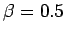

Exploremos ahora el significado del parámetro en la ecuación 3.5. La Figura 3.3 n¡muestra las funciones de pertenencia de dos números difusos trapezoidales and . De nuevo, estamos interesados en decidir cuál de los dos números difusos es ``mayor'' que el otro.
Si seleccionamos  en la ecuación 3.3, podemos calcular el valor representativo de y como una función de . Los resultados se muestran en la figura 3.4. Nótese que para el valor representativo de es mayor que el de ; lo contrario sucede para .
La ecuación 3.3 muestra que el valor representativo de un número difuso es un promedio ponderado de sus  cortes. El parámetro en 3.5 cambia el peso relativo de cada
cortes. El parámetro en 3.5 cambia el peso relativo de cada  cut: los
cut: los  cortes bajos del número serán menos importantes para el caso en que que para el caso en que .
cortes bajos del número serán menos importantes para el caso en que que para el caso en que .